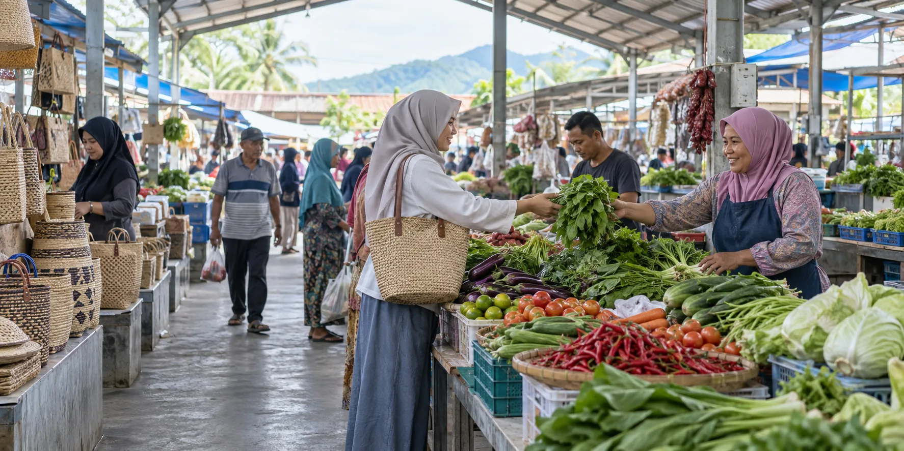

Daftar sebagai pedagang
Catat identitas, usaha, lokasi, foto, dan hubungan dengan pasar melalui formulir lima langkah.
Mulai pendataan →LAYANAN PUBLIK DIGITAL
Pilih kebutuhan Anda. Setiap layanan dilengkapi petunjuk singkat dan melindungi data pribadi pedagang.
Pendaftaran terbuka untuk pedagang pasar maupun pelaku usaha non-pasar yang berbasis di Kabupaten Pinrang.
Catat identitas, usaha, lokasi, foto, dan hubungan dengan pasar melalui formulir lima langkah.
Mulai pendataan →Pantau proses menggunakan nomor registrasi dan token pribadi yang diterima setelah mengirim formulir.
Cek status →Periksa status, masa berlaku, nomor, dan hash dokumen tanpa menampilkan NIK atau data sensitif.
Verifikasi SKPT →Perubahan setelah pengiriman tidak langsung menimpa data induk dan harus diperiksa petugas.
Buka status dan koreksi →Pengesahan dilakukan secara digital selama SKPT masih berlaku dan tidak memperpanjang masa berlakunya.
Pelajari ketentuan →Temukan alur sederhana untuk pedagang, Admin, Kepala Pasar, serta Kepala Dinas.
Buka panduan →
SATU SUMBER DATA
Usaha, lokasi, unit pasar, dan klasifikasi tetap terhubung ke satu identitas internal yang aman.